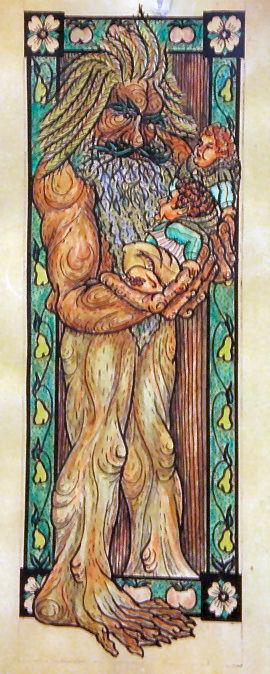

Complete Monster
by
Radaghast Kary
← Treacle
↑Index↑
Trebbit →

Illustration by Tom Loback,
Attribution
Treant
also known as
Ent
Members:
Blackroot Treant
Elder Treant
Frostblight Treant
Lightning Treant
General
General links
Treant on Wikipedia
Myth sources
Lord of the Rings
Myth links
Treant on Wikipedia
5e
CG
D&D 5 facts
Size: Huge
Type:
Plant
CR: 9
D&D 5 sources
Monster Manual
, p. 289
Monsters & Creatures
, p. 32
D&D 5 links
Treant in 5e d20 SRD
Treant on AideD&D
4e
D&D 4 facts
Level: 16
Type: Elite Controller
XP: 2800
Entry: Treant
D&D 4 sources
Monster Manual
, p. 251
D&D 4 links
Treant on D&D Insider
3e
NG
D&D 3.0 facts
Abilities: Str 29, Dex 8, Con 21, Int 12, Wis 15, Cha 12
AC: 20 (-2 size, -1 Dex, +13 natural)
Advancement: 8-16 HD (Huge); 17-21 HD (Gargantuan)
Attacks: 2 slams +12 melee
CR: 8
Damage: Slam 2d6+9
HD: 7d8+35 (66)
Initiative: -1 (Dex)
Organization: Solitary or grove (4-7)
Qualities: Plant, fire vulnerability, half damage frompiercing
Reach: 10 ft. by 10 ft./15 ft.
Saves: Fort +10, Ref +1, Will +6
Size: Huge
Skills: Treants receive skills as though they were fey*. They have a +16 racial bonus to Hide checks made in forested areas.
Speed: 30 ft.
Terrain: Any forest
Treasure: Standard
Type:
Plant
D&D 3.0 links
Treant in 3.0 d20 SRD
D&D 3.5 links
Treant in 3.5e d20 SRD
0e
OD&D facts
Number Appearing: 2-20
AC: 2
Move: 6
HD: 8
Chance in Lair: Nil
Treasure: Nil
OD&D sources
Monsters & Treasure
, p. 4
Chainmail sources
Chainmail
, p. 35
L
S&W
facts
AC: [17]
Attacks: strike (2d6, 3d6, 4d6)
HD: 7–12
HDE: 7
Move: 4
Special: Control trees
XP: 600, 8
S&W
sources
The Blue Book of Dangers and Dweomers
, p. 97
{kind=link}